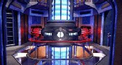

Reattore Materia/Antimateria (MAMR) |
Tutti i sistemi di una nave stellare funzionano grazie all'energia che gli viene fornita dal reattore materia/antimateria (MAMR, Matter/Antimatter Reactor), che produce un'energia equivalente a quella che si sviluppa all'interno di una stella. Nel MAMR si annichiliscono materia e antimateria, sviluppando l'energia necessaria per creare un campo di curvatura. Nessun altro sistema di produzione di energia può competere con il MAMR in termini di efficienza e di quantità di energia prodotta in modo controllato. Il MAMR è composto da quattro sottosistemi: gli iniettori dei reagenti, i segmenti di costrizione magnetica, la camera di reazione materia/antimateria e i condotti di trasferimento dell'energia. Materia e antimateria sono stivate separatamente ai due estremi della sezione motori. La materia usata per alimentare i motori a curvatura è costituita da deuterio, un isotopo dell'idrogeno, che viene conservato in serbatoi allo stato liquido situati all'estremità superiore della sezione motori, per permettere un facile rifornimento ed un'eventuale rapida espulsione del combustibile. L'antimateria invece, costituita da antideuterio, è conservata in capsule cilindriche separate ed indipendenti situate all'estremità inferiore dello scafo. Ognuna di queste capsule è dotata di un proprio sistema di contenimento e può essere espulsa rapidamente. Da ogni serbatoio e da ogni capsula si diramano condotti che trasportano l'antimateria al nucleo di curvatura.
Iniettori dei reagenti Gli iniettori, posti alle estremità superiore ed inferiore del MAMR, immettono un flusso controllato di materia e antimateria verso i segmenti di costrizione, al centro del nucleo. Qui entrano in gioco i sistemi che devono controllare la reazione; infatti, una reazione incontrollata tra materia e antimateria provoca un'esplosione catastrofica con un rilascio incontrollato di una grande quantità di energia.
Segmenti di costrizione magnetica I costrittori magnetici costituiscono la parte centrale del nucleo e provvedono a fornire il supporto strutturale alla camera di reazione stessa, il contenimento della pressione per tutto il nucleo e l'allineamento del flusso del combustibile convogliandolo verso la camera di reazione. Ogni costrittore è formato da due parti, ognuna delle quali contiene un compressore toroidale e numerose serie di bobine di costrizione magnetica. I costrittori concentrano e accelerano il flusso di carburante proveniente dagli iniettori per indirizzarlo alla camera di reazione.
Camera di reazione La camera di reazione è il cuore vero e proprio della nave, la sua funzione principale è di consentire l'annichilazione controllata di materia e antimateria e trasferire l'energia risultante alle condutture EPS (electroplasma system). La camera di reazione è costruita attorno ad una rete di cristalli di dilitio (l'unico materiale conosciuto che non reagisce all'antimateria), che consente mediante il rallentamento dell'antimateria di produrre una reazione constante e controllata. Tutta la camera è costruita con compositi di duritanio e altre leghe estremamente resistenti a calore e pressione; appositi superconduttori creano un campo di contenimento in grado di reggere una temperatura di 4.000.000 Kelvin e una pressione di 200.000 atmosfere. A partire dalla seconda metà del XXIV secolo nelle camere di reazione è presente un sistema che permette la ricristallizzazione del dilitio. L'energia fornita dall'annichilazione viene divisa e inviata nei due condotti di plasma che escono dal nucleo di curvatura e si dirigono verso le gondole dei motori a curvatura. L'energia prodotta dalla reazione viene inviata anche ad altri sistemi tramite la rete di distribuzione energetica della nave.
Condutture di trasferimento di energia Le condutture EPS sono simili ai costrittori magnetici in quanto utilizzano anch'essi un campo di contenimento interno per trasferire il plasma da un punto all'altro. La principale differenza è che questi dispositivi devono percorrere distanze molto maggiori per raggiungere ogni sezione dell'astronave, dove ricaricano accumulatori e batterie che a loro volta alimentano i vari sistemi (l'unico componente alimentato direttamente dal plasma è il motore a curvatura).
Tellerio Elemento di importanza decisiva per il funzionamento del MAMR. Senza di esso, il tasso di reazione non può rimanere a livelli accettabili per far funzionare i motori a curvatura (Resistance).
Il tasso di reazione dell'antimateria deve essere al di sopra del 9%,
altrimenti gli iniettori di plasma si chiuderebbero e non sarebbe possibile
attivare le gondole di curvatura (Resistance).